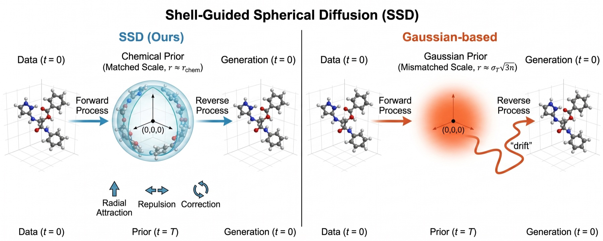
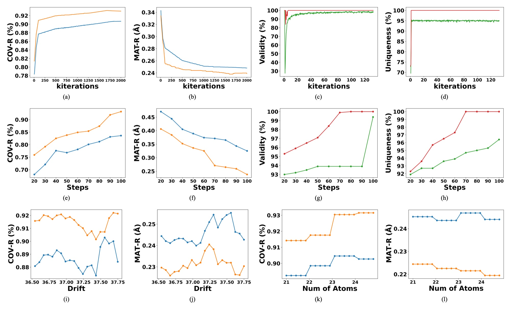
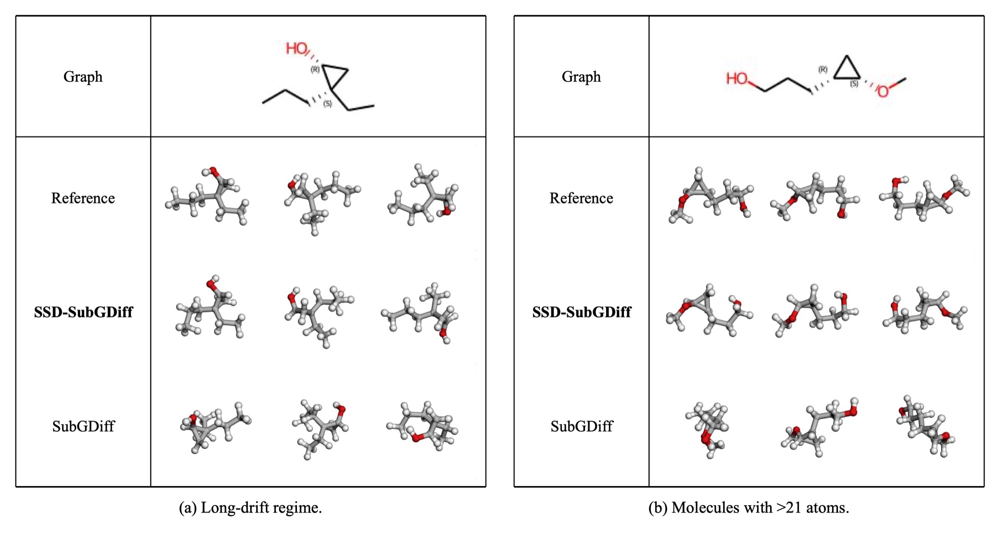

Start diffusion where molecules actually live. SSD replaces the Gaussian prior with a chemically scaled spherical shell and shell-aware dynamics. It is a drop-in change for any coordinate-space backbone.
1Maxora AI · 2National Taiwan University · 3University of Washington · 4Microsoft
Abstract
Diffusion models for 3D molecular geometry almost always use an isotropic Gaussian prior. Its Frobenius-norm scale \(\sigma_T\sqrt{3n}\) is set by the noise level and atom count, not by chemistry. The result is a scale mismatch that grows with \(n\) and produces high spatial entropy and unstable early trajectories.
We introduce Shell-guided Spherical Diffusion (SSD), a model-agnostic framework that replaces the Gaussian prior with a chemically scaled spherical-shell initialization. It adds coordinated radial attraction, short-range repulsion, and an SE(3)-equivariant correction field to both the forward and reverse processes. Initialization and dynamics have to be designed together: neither a shell alone nor radial fields alone reproduces SSD's stability or accuracy.
We evaluate SSD on five coordinate-space backbones (GeoDiff, SubGDiff, EDM, SemlaFlow-style flow matching, and MCF), each under its own evaluation protocol. With identical training and sampling budgets, SSD consistently improves both quality and diversity. It lifts weaker backbones such as GeoDiff and EDM to match or surpass stronger diffusion-, VAE-, and flow-based baselines, without changing their architectures, loss functions, or training pipelines.
01 · The problem
By the Gaussian Annulus Theorem, a sample from \(\mathcal{N}(0, \sigma_T^2 I_{3n})\) almost always lands on a thin shell of radius \(\sigma_T\sqrt{3n}\). Drag the slider: as the atom count grows, the shell moves outward while its width stays roughly the same. The prior is effectively a sphere, but its size depends on n and \(\sigma_T\), not on how large the molecule is.
The diffusion starts from a sphere whose size has nothing to do with the target molecule, so the model first has to undo that mismatch:
The histogram is a live Monte-Carlo estimate with σ = 1.
02 · Method
SSD has two jointly designed components. Every state is centered to zero center of mass. Atoms start on a spherical shell of radius \(r_{\text{SSD}}\), calibrated to the mean radius of centered training conformations (6.37 Å for GEOM-QM9 and 21.16 Å for GEOM-Drugs). Atoms are assigned to shell points by a random permutation that is resampled for each trajectory. The reverse process then combines three drifts:
This is a toy 14-atom illustration for intuition. The drifts are drawn schematically, and "path excess" is the trajectory length divided by the straight-line start-to-end distance. For measured trajectory statistics, see the table below and Section 4.5 of the paper.

SSD preserves SE(3)-equivariance by construction and adds no learnable parameters. Each backbone keeps its architecture, loss form, and training pipeline; only the data-corruption process changes. The ablation on GEOM-QM9 (SubGDiff protocol) shows that neither component works on its own:
| Variant | Init. / Prior | Dynamics | COV-R ↑ | COV-P ↑ | MAT-R ↓ | MAT-P ↓ |
|---|---|---|---|---|---|---|
| (1) Gaussian baseline | Gaussian | vSubGD | 90.91 | 50.16 | 0.2460 | 0.6114 |
| (2) Gaussian + rep./corr. | Gaussian | vrep + vscore | 90.95 | 50.20 | 0.2455 | 0.6098 |
| (3) Shell(rGauss) | Shell(rGauss) | None | 90.92 | 50.18 | 0.2462 | 0.6107 |
| (4) Shell(rGauss) + SSD dyn. | Shell(rGauss) | vrad + vrep + vscore | 91.50 | 51.00 | 0.2443 | 0.6020 |
| (5) SSD (ours) | Shell(rSSD) | vrad + vrep + vscore | 93.20 | 63.50 | 0.2380 | 0.4100 |
Guidance terms alone do not fix the radius mismatch (2). Projecting the Gaussian onto a dimension-derived shell changes almost nothing (3). The full gain needs a chemically calibrated shell together with shell-consistent dynamics (5).
Radial deviation \(\mathbb{E}_t[\,|\lVert x_t\rVert - r_{\text{SSD}}|\,]\) measures how far a trajectory strays from the shell radius. Path excess \(\mathrm{PathLen}/\lVert x_T - x_0\rVert\) is the trajectory length relative to the direct shell-to-structure displacement.
| Method | Regime | Radial dev. ↓ | Path excess ↓ |
|---|---|---|---|
| SubGDiff | SDE | 0.4534 | 246.91 |
| SSD-SubGDiff | SDE | 0.1781 | 1.71 |
| SemlaFlow | ODE | 0.2145 | 1.29 |
| SSD-Flow | ODE | 0.1096 | 1.11 |
03 · Results
We evaluate each backbone and its SSD variant under that backbone's own protocol, with identical training and sampling budgets. Mean values are shown, and highlighted numbers improve on the corresponding backbone. "–" marks a metric not reported in the original paper. SSD entries are single runs (training seed 42). The paper also reports medians (Table 1) and three-seed statistics (Table 3).
| Model | Dataset | COV-R (%) ↑ | COV-P (%) ↑ | MAT-R (Å) ↓ | MAT-P (Å) ↓ |
|---|---|---|---|---|---|
| GeoDiff | QM9 | 80.36 | 53.66 | 0.2820 | 0.6673 |
| SSD-GeoDiff | QM9 | 92.00 | 61.40 | 0.2425 | 0.4188 |
| GeoDiff | Drugs | 64.12 | 52.79 | – | – |
| SSD-GeoDiff | Drugs | 91.69 | 70.23 | 0.8463 | 1.1543 |
| SubGDiff | QM9 | 90.91 | 50.16 | 0.2460 | 0.6114 |
| SSD-SubGDiff | QM9 | 93.20 | 63.50 | 0.2380 | 0.4100 |
| SubGDiff | Drugs | 76.16 | – | 1.0003 | – |
| SSD-SubGDiff | Drugs | 92.50 | 71.10 | 0.8300 | 1.1400 |
| Model | Dataset | COV-R (%) ↑ | COV-P (%) ↑ | MAT-R (Å) ↓ | MAT-P (Å) ↓ |
|---|---|---|---|---|---|
| MCF | QM9 | 95.00 | 93.70 | 0.1030 | 0.1190 |
| SSD-MCF | QM9 | 96.15 | 94.61 | 0.0993 | 0.1087 |
| MCF | Drugs | 84.70 | 66.80 | 0.3900 | 0.6180 |
| SSD-MCF | Drugs | 85.37 | 68.82 | 0.3792 | 0.6089 |
| Model | Dataset | AtomStab (%) ↑ | MolStab (%) ↑ | Valid (%) ↑ | Unique (%) ↑ |
|---|---|---|---|---|---|
| EDM | QM9 | 98.7 | 82.0 | 91.9 | 98.9 |
| SSD-EDM | QM9 | 99.3 | 99.8 | 100.0 | 100.0 |
| EDM | Drugs | 81.3 | – | – | – |
| SSD-EDM | Drugs | 90.5 | 70.1 | 98.5 | 99.2 |
| SemlaFlow | QM9 | 99.9 | 99.7 | 99.4 | 95.4 |
| SSD-Flow | QM9 | 99.9 | 99.9 | 100.0 | 100.0 |
| SemlaFlow | Drugs | 99.8 | 97.3 | 93.9 | 100.0 |
| SSD-Flow | Drugs | 99.8 | 97.6 | 100.0 | 100.0 |


Citation
@inproceedings{chuang2026ssd,
title = {{SSD}: Shell-Guided Spherical Diffusion for Molecular Geometry Generation},
author = {Chuang, Yun-Yen and Gu, Chen-Sheng and Hsu, Hung-Min and Lin, Kevin and Chang, Ray-I},
booktitle = {Advances in Neural Information Processing Systems (NeurIPS)},
year = {2026}
}